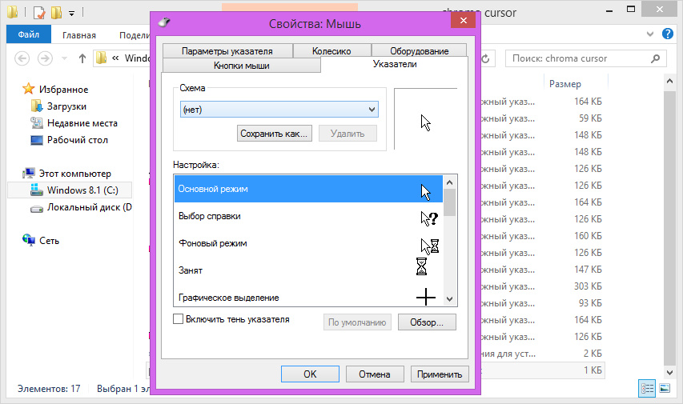

Популярные курсоры
Курсоры для Windows 7/8/10/11
Курсоры Windows являются одним из самых важных элементов интерфейса рабочего стола, ведь именно на них наибольшее концентрируются наши глаза проводя время за компьютером. Конечно
стандартные курсоры нечем не плохие, но со временем однообразие всегда просто надоедает и нам
хочется чего-то нового и интересного. Давно не секрет что указатель мыши можно изменить, для этого
и был создан этот раздел. Выбирайте понравившиеся по душе набор, устанавливайте и наслаждайтесь.
Данный раздел содержит исключительно указатели которые работают на основе стандартных средств
для Windows, не требующих использования никаких дополнительных програм.
Зачем нужно ставить курсор?
Кастомный курсор может быть полезен по следующим причинам:
- Улучшение дизайна: Кастомный курсор позволяет создать уникальный и привлекательный дизайн, который будет выделяться среди других сайтов или приложений.
- Повышение удобства использования: Кастомные курсоры могут быть более интуитивно понятными и полезными для пользователей, так как они могут быть адаптированы под нужды конкретного приложения или сайта.
- Уникальность: Использование кастомного курсора может помочь сделать ваш сайт или приложение более уникальным и запоминающимся для пользователей.
- Привлечение внимания: Кастомный курсор может привлечь внимание пользователей и сделать ваше приложение или сайт более интересным для изучения.
- Соответствие бренду: Правильно подобранный кастомный курсор может помочь усилить восприятие бренда и улучшить узнаваемость вашего продукта.
- Адаптация под задачи: Кастомный курсор может быть разработан с учетом конкретных задач и функций вашего приложения или сайта, что сделает его использование более удобным и эффективным.
- Отслеживание пользовательских действий: Кастомный курсор также может использоваться для отслеживания и анализа пользовательских действий, что позволяет улучшать продукт и делать его более удобным для использования.

Пиксельный анимированный RGB курсор для любителей таких игр, как Terraria, Stardew Valley. В архиве два предложенных размера курсора, инструкция к установке, и несомненно, сам инсталлер.
Автор (разработчик): whitepony
Представленный пак заменит ваши стандартные курсоры - на семнадцать новых уникальных изображений, наделив два из которых - анимацией. Основная заливка указателей мыши сменится на градиент серых оттенков, подчеркнув каждый курсор оранжевой матовой ленточкой, плавно переходящей в нежно-розовую заливку. Минималистичный стиль курсоров и гармоничное сочетание выбранных цветов, смогут смотреться на любой выбранной вами теме, а также на самых разных изображениях фона вашего рабочего стола.
Для установки курсоров «MMXX» в формате CUR, ANI распакуйте архив и запустите исполняемый файл install.inf от имени администратора, в результате чего указатели автоматически инсталлируются на компьютер. Далее Вам остается только выбрать их в настройках системы.
Автор (разработчик): raylark

Набор курсоров используемый в меню игры Overwatch с изменённой цветовой схемой. Выполнен в чёрно-красных цветах. Легко устанавливается с помощью файла Install.inf. Подходит к тёмной теме Windows 10.
Курсор в бело-оранжевых цветах - Overwatch Pointer
Автор (разработчик): Darques
Почему люди любят подсветку? Казалось бы, парочка светодиодов, однако сколько радости от них! Любая подсветка способна скрасить практически всё, придать особый шарм, создать некую уютную атмосферу, да и просто радовать глаз. Если тебе надоели стандартные курсоры от Microsoft, то SIGMA - весьма хороший выбор. Минималистичный дизайн, приятная переливающаяся разными цветами радуги окантовка, две вариации цвета, разные размеры, а также очень простая установка!
Автор (разработчик): whitepony
Как установить курсоры на Windows 7/8/10
Установка курсоров на Windows может быть автоматическая или ручная, все это зависит
от того как автор предоставил тот или иной набор с курсорами.
1. Для начала работы разархивируйте все файлы в удобную для вас папку(для этого может
понадобится специальная программа по типу WinRAR)
2.После переходим в подготовленную папку и находим файл "install.inf" и нажимаем на него правой кнопкой мыши затем установить
3.Затем в папке находим файл "Launch Mouse Properties" и нажимаем на него
4.Откроется окно "Свойства мышь" в котором нам нужно перейти в окно "Указатели"
5. Нажимаем на "Схема"
6. Выбираем свою кастомную мышь
7. Нажимаем "ОК"